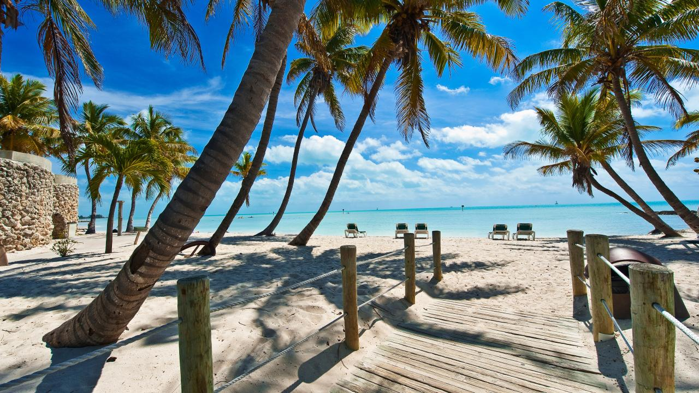
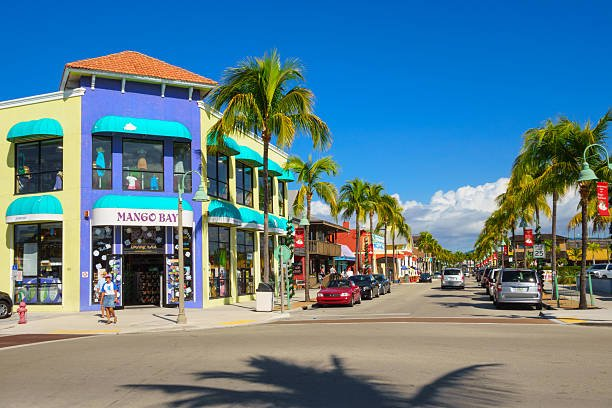
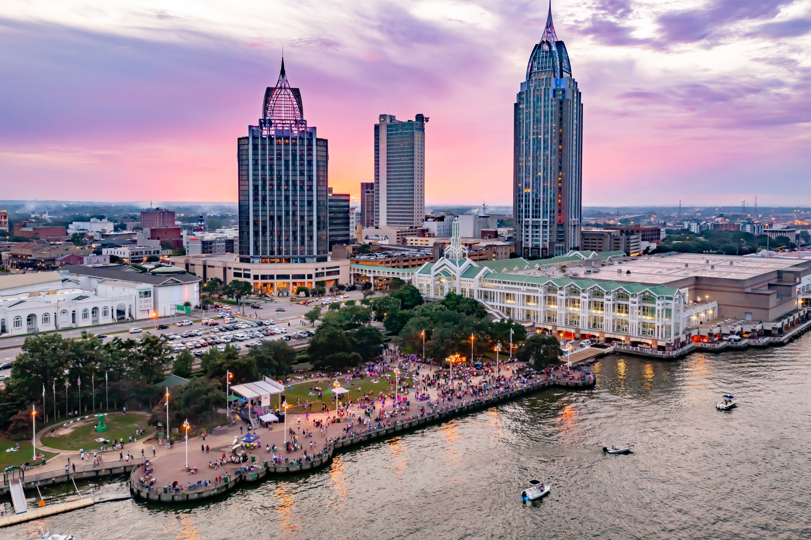

Top 5 Florida & Gulf of Mexico Destinations for the Great Loop
Key West

Discover the southernmost point of the continental United States in Key West. Experience the laid-back island vibes,
explore historic sites like Ernest Hemingway's house, and indulge in fresh seafood at waterfront restaurants. Don't
miss the breathtaking sunsets at Mallory Square. Dive into the crystal-clear waters surrounding Key West for world-class
snorkeling and scuba diving adventures.
Fort Myers Beach

Relax on the pristine white sands of Fort Myers Beach, known for its stunning sunsets and vibrant atmosphere. Explore
nearby nature preserves like Lovers Key State Park, where you can kayak through mangrove forests and spot wildlife such
as manatees and dolphins. Embark on a sunset cruise to witness the fiery hues painting the sky over the Gulf of Mexico, creating a mesmerizing backdrop.
New Orleans

Immerse yourself in the rich culture and vibrant music scene of New Orleans. Explore the historic French Quarter, sample
Cajun and Creole cuisine, and enjoy live jazz performances on Bourbon Street. Experience the city's unique blend of history,
art, and nightlife. Indulge in the city's famous cuisine with a culinary tour, sampling classic dishes like gumbo, jambalaya, and beignets.
Mobile

Dive into the maritime history of Mobile, Alabama's oldest city. Visit the USS Alabama Battleship Memorial Park, explore the
historic district's antebellum homes, and stroll along the waterfront at Cooper Riverside Park. Don't miss the annual Mardi
Gras celebrations, a tradition dating back to the early 18th century.
Galveston
Experience the coastal charm of Galveston Island, known for its historic architecture, sandy beaches, and family-friendly
attractions. Explore the historic Strand District, visit the Galveston Island Historic Pleasure Pier, and relax on the beach
or go fishing in the Gulf of Mexico. Step back in time with a visit to the historic Strand District, lined with Victorian-era buildings
housing unique shops, galleries, and restaurants.